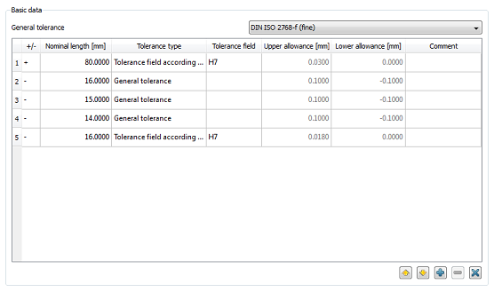

|
|
|


公差计算
在本模块中，您需要为各个元素输入公称长度及其相应的偏差。这些值随后用于计算总公差。该计算使用恒定分布（算术和）和公差平方的平方根（正态分布）来定义尺寸链的最大和最小尺寸。您也可以使用相应的偏差来计算尺寸链的公称长度/期望值。是根据 ISO 286 定义的，其中公差定义到 <= 3,150 mm 的尺寸。在 KISSsoft 中，对于配合（公差）等级 H、h、JS 和 js，标准中使用的值被外推至 10,000 mm。

图 56.1：基本数据
Tolerance Calculation
In this module, you enter the nominal lengths and their corresponding allowances for various elements. These values are then used to calculate an overall tolerance. This calculation uses a constant distribution (arithmetical sum) and the square root of the tolerance squares (normal distribution) to define the maximum and minimum size of the measurement chains. You can also use the appropriate allowances to calculate the nominal length/expected value of the measurement chain. The is defined according to ISO 286 in which the tolerances are defined up to a size of <= 3,150 mm. In KISSsoft, for fit (tolerance) classes H, h. JS and js, the values used in the standard are extrapolated up to a value of 10,000 mm.
Figure 56.1: Basic data